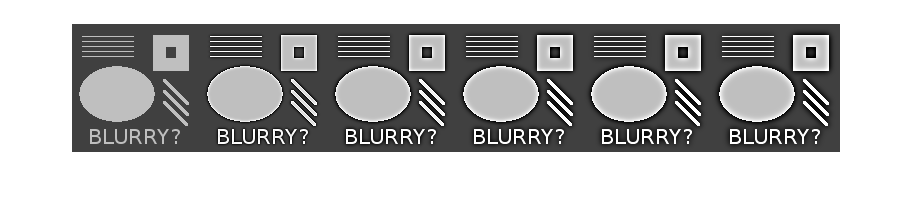
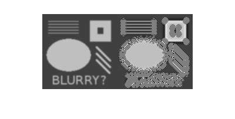

Contents
- Q2
- backslash (x1)
- normal equation (x2)
- QR factorisation (x3)
- SVD (x4)
- Summary of methods
- Q3
- Q4
- Use image read from a file
- Build a discrete 2D Laplace operator
- Output original, blur, edge and final result side-by-side
- Unsharp mask on 'eye.png'
- Unsharp mask on non-blurry image
- Changing blurring strength parameter from 0.1 to 0.5
function [ ] = hw3( )
Q2
m = 50;
n = 5;
t = linspace(0,1,m)'; %transpose to form column vector
A = fliplr(vander(t));
A = A(:,1:n);
b = cos(4*t);
backslash (x1)
x1 = A\b;
%plot(t,A*x1,'--b');
n1 = norm(A*x1-b);
normal equation (x2)
x2 = A'*A\A'*b;
%plot(t,A*x2,'--b');
n2 = norm(A*x2-b);
QR factorisation (x3)
[Q,R] = qr(A);
y = Q'*b;
x3 = R\y;
%plot(t,A*x3,'--b');
n3 = norm(A*x3-b);
SVD (x4)
[U,S,V] = svd(A,0);
x4 = V*inv(S)*U'*b;
%plot(t,A*x4,'--b');
n4 = norm(A*x4-b);
Summary of methods
format long g x = [x1 x2 x3 x4] res_norms = [n1 n2 n3 n4]
x =
Columns 1 through 3
0.977651051050956 0.977651051051456 0.977651051050952
0.787296437030576 0.78729643702075 0.787296437030604
-13.7266900281111 -13.7266900280686 -13.7266900281111
14.9930146535961 14.9930146535324 14.9930146535962
-3.66575965474393 -3.66575965471298 -3.66575965474396
Column 4
0.977651051050958
0.787296437030578
-13.7266900281111
14.9930146535962
-3.665759654744
res_norms =
Columns 1 through 3
0.0613567562398873 0.0613567562398872 0.0613567562398881
Column 4
0.0613567562398875
Based on the 2-norms of the residuals, the QR factorisation stands out from the other methods (larger in the 14th digit).
Q3
Devise an experiment?!
cond(A)
ans =
642.667357121995
Q4
function [ uenhance ] = unsharp( u, N, strength )
% Returns matrix of pixels, u is value of imread. % N is number of blurring steps, and % strength is the blurring parameter (0.1 in original example).
Use image read from a file
[n,n2] = size(u); if (n ~= n2) error('by default, this only supports square images') end
Build a discrete 2D Laplace operator
e = ones(n,1); L1 = spdiags([e -2*e e], [-1 0 1], n, n); % this next line implements "Neumann boundary conditions": you could % try commenting it out. L1(1,1) = -1; L1(end,end) = -1; I = speye(n,n); L = kron(L1, I) + kron(I, L1); % figure(1); clf; % %pcolor(u); % try this one too % imagesc(u); % caxis([0 1]) % colormap(gray) % axis equal, axis tight % "stretch" the matrix representation of the image into one long % vector. v = reshape(u, n*n, 1); % Do N steps of blurring, of specified strength for i=1:N v = v + strength*(L*v); end % create edge map edge = reshape(u, n*n, 1) - v; % enhance image enhance = reshape(u, n*n, 1) + edge; % convert the long vector back into a matrix ublur = reshape(v, n, n); uedge = reshape(edge, n, n); uenhance = reshape(enhance, n, n); % figure(2); clf; % imagesc(uenhance); % caxis([0 1]) % colormap(gray) % axis equal, axis tight
Output original, blur, edge and final result side-by-side
You could look at the resulting file with a web browser or image viewer result = [u ublur uedge uenhance]; imwrite(result, 'result.png')
end
Unsharp mask on 'eye.png'
u = imread('eye.png'); % convert image to double and scale to [0,1] u = double(u) / 255; uenhance = unsharp(u, 10, 0.1); result = [u uenhance]; imwrite(result, 'result-eye.png'); imshow('result-eye.png');

Unsharp mask on non-blurry image
u = imread('testpat_noblur.png'); % convert image to double and scale to [0,1] u = double(u) / 255; result = u; for N = 10:10:50 uenhance = unsharp(u, N, 0.1); result = horzcat(result, uenhance); end imwrite(result, 'result-noblur.png'); imshow('result-noblur.png'); figure; clf; imshow(uenhance, 'InitialMagnification', 300);

The unsharp mask locally changes grey to white and black on either side of the edge.
More blurring steps increases this contrast at the edges.
Changing blurring strength parameter from 0.1 to 0.5
u = imread('testpat_blur2.png'); % convert image to double and scale to [0,1] u = double(u) / 255; uenhance = unsharp(u, 10, 0.4); result = [u uenhance]; imwrite(result, 'result-2.png'); imshow('result-2.png');
Changing the blurring parameter from 0.1 to 0.5 introduces more "noise" at the edges
end